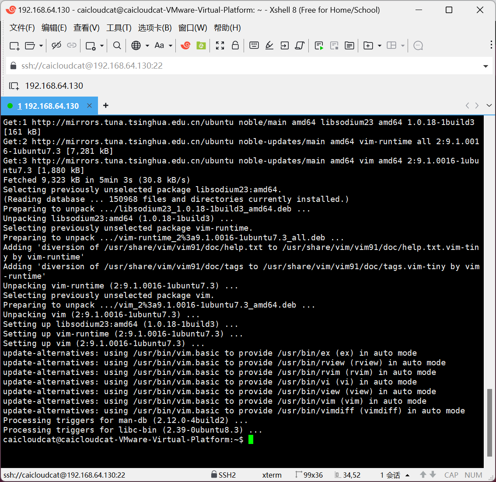
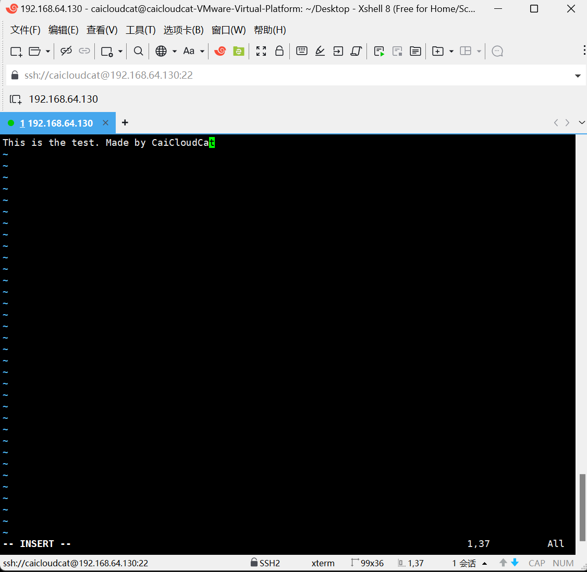
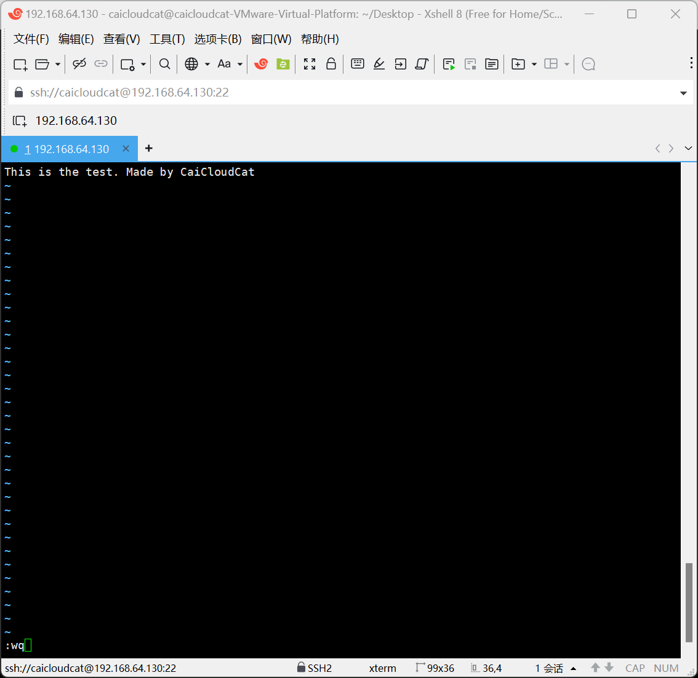

专题04-使用vim编辑器¶
使用vim编辑器进行文本编辑Linux系统中的文件。
1 引言¶
Vim编辑器是一个功能强大且高度可定制的文本编辑器，最初由Bram Moolenaar在80年代末基于vi编辑器开发而来，是 vi 编辑器的增强版本。
vi 最初是为 Unix 系统设计的，而 Vim（Vi IMproved）则增加了更多功能，如语法高亮、多级撤销树、图形界面支持等，使其成为类Unix系统用户以及程序员中最受欢迎的文本编辑器之一。
我们在安装和配置Ubuntu服务器时，经常需要修改各种配置文件，因此需要掌握vim的使用方法。
2 Vim概述¶
2.1 基本特点¶
- 多模式设计：Vim具有多种操作模式，包括命令模式（Normal mode）、插入模式（Insert mode）和末行模式（Ex mode/Command-line mode）等。每种模式都有其特定的操作方式和快捷键，使得Vim能够快速切换和执行各种文本编辑任务。

- 高度可定制性：Vim允许用户通过配置文件（如.vimrc）进行个性化设置，包括快捷键、插件、语法高亮、代码折叠等。这种高度可定制性使得Vim能够满足不同用户的需求和偏好。
- 跨平台支持：Vim可以在Unix、Linux、macOS和Windows等多个操作系统上运行，为用户提供一致的编辑体验。
2.2 主要功能¶
- 文本编辑：Vim提供了丰富的文本编辑功能，如移动光标、复制粘贴、删除文本、撤销与重做等。这些功能在命令模式下通过快捷键实现，大大提高了编辑效率。
- 代码编辑：Vim特别适合于程序员使用，它支持代码补全、编译及错误跳转等编程功能。此外，Vim还提供了代码折叠、语法高亮等特性，帮助程序员更好地理解和编辑代码。
- 文件操作：在末行模式下，Vim支持文件的保存、退出、查找与替换、显示行号等操作。用户可以通过输入相应的命令来快速完成这些任务。
2.3 安装Vim¶
Ubuntu中并没有自带vim，先要安装：sudo apt install vim
apt模式安装vim需要几分钟时间。

3 Vim使用方法¶
3.1 用vim打开和关闭文件¶
使用 vim编辑器 打开 test.txt
！！！若打开后异常退出(
ctrl+z)，可手动删除**交换文**件（即vim创建的临时文件），如果是正常保存则不用删除，因为**交换文件**被保存为了你需要的那个文件了。
i进入编辑模式[i:insert 插入]，这样就可以编辑文件了。

Esc键退出编辑模式，进入命令模式，这样就可以输入各种vim命令了，注意命令模式下光标会跑到编辑器的最左下方去。
备注：在命令模式下，可以输入命令了，例如输入
“:wq”命令后敲回车来保存文件并退出vim。

vim命令模式下的几个文件保存命令：
:q退出不保存[q:quit 退出]:q!强制退出不保存:w保存文件[w:write 写入]:wq保存退出 ------ 这个用的很多
在图形环境下，从桌面上看新创建了一个文件test.txt，并且内容已经修改，双击可以打开这个文件，这个界面类似于Windows中的记事本程序。

既然我们可以在图形界面中用可视化的方式编辑文件内容，为什么还要用vim呢？
这是因为很多服务器只安装了Shell模式，没有安装图形化的桌面环境，所以需要掌握vim的用法。
3.2 vim中的文本操作¶
复制多行¶
（1）移动光标到要开始复制的第一行（在命令模式下或编辑模式下均可）。
（2）按esc键，进入命令模式，输入 v 进入可视模式[v:visual 可视]，这样就可以按行选择需要的文本了。

（3）使用方向键上下移动选择多行。
 （4）按下
（4）按下y复制选择的文本。此时 vim 会自动将光标定位到选中文本的开始的地方，并退出可视模式。
（5）移动光标到要粘贴的位置，按p粘贴。

删除多行¶
（1）移动光标到要开始复制的第一行（在命令模式下或编辑模式下均可）。
（2）按esc键，进入命令模式，输入 v 进入可视模式 [v:visual 可视]，这样就可以按行选择需要的文本了。
（3）使用方向键上下移动选择多行。
（4）按下d删除选择的文本。此时 vim 会自动将光标定位到选中文本的开始的地方，并退出可视模式。

快捷键¶
我们在使用windows系统时，经常使用ctrl+z用于撤销，使用ctrl+y用于重做，在vim中对应的快捷键如下：
注意使用这些快捷键需要在 命令模式 下
3.3 vim其他常用命令¶
查找文本¶
/xxx ：从光标所在位置==向前==查找字符串xxx

/^xxx：查找以xxx为行首的行

/abc$：查找以xxx为行尾的行

?xxx：从光标所在为主==向后==查找字符串xxx

注意?和/的区别
n：向同一方向重复上次的查找指令
N：向相反方向重复上次的查找指定
快速定位¶
当你的文件打开后页数很多时，在命令模式下通过这几个快捷键可以快速定位
-
ctrl+f[f:forward 向前]向下翻一页 -
ctrl+b[b:backward 向后]向上翻一页 -
[[跳转到文件开头 -
]]跳转到文件结尾 -
数字gg跳转到指定行
示例：跳转到第10行 10gg
gg 是 go to line 的缩写形式 "跳 转到指定的行"
-
0移动到行首 -
$移动到行尾[$:shift+4]
行号¶
有时候行数很多，为了方便定位，我们可以显示行号，在命令模式下输入
:set nu 显示行号 [nu 是 number 的缩写形式]
:set nonu 取消显示行号 [nu 是 number 的缩写形式]

替换文本¶
如果需要替换文本，则使用在命令模式下输入：
示例： :%s/test/test1/g （将文档中所有的单词 test 替换成 test1）
- %表示对整个文档进行操作
- s表示替换操作
- g表示全局替换,若不加g,则只会替换每行中第一个匹配到的文本
执行前：

执行后：

| 快捷键 | 功能描述 |
|---|---|
/old/new |
用new替换当前行第一个old |
/a1/a2/g |
将当前光标所在行中的所有 a1 用 a2 替换 |
:n1,n2s/a1/a2/g |
将文件中 n1 到 n2 行中所有 a1 都用 a2 替换 |
:%s/a1/a2/g |
将文件中所有的 a1 都用 a2 替换 |
:%s/^/xxx/g |
在每一行的行首插入xxx，^表示行首 |
:%s//xxx/g |
−在每一行的行尾插入xxx，/xxx/g在每一行的行尾插入xxx，表示行尾 |
删除文本¶
| 快捷键 | 功能描述 |
|---|---|
x |
删除光标所在位置的字符 |
dd |
删除光标所在行 |
ndd |
删除当前行（包括此行）后 n 行文本 |
dG |
删除光标所在行一直到文件末尾的所有内容 |
D |
删除光标位置到行尾的内容 |
:a1,a2d |
函数从 a1 行到 a2 行的文本内容 |
复制粘贴文本¶
| 快捷键 | 功能描述 |
|---|---|
p |
将剪贴板中的内容粘贴到光标后 |
P（大写） |
将剪贴板中的内容粘贴到光标前 |
y |
复制已选中的文本到剪贴板 |
yy |
将光标所在行复制到剪贴板，此命令前可以加数字 n，可复制多行 |
yw |
将光标位置的单词复制到剪贴板 |
4 grep 命令用法介绍¶
4.1 grep 命令简介¶
grep(Global Regular Expression Print[全局正则表达式打印])命令是一个强大的文本搜索工具，它能使用正则表达式搜索文本，并把匹配的行打印出来。我们在检索文本内容时，常使用这个命令。
关于正则表达式：https://www.bilibili.com/video/BV1da4y1p7iZ/?spm_id_from=333.337.search-card.all.click&vd_source=1be27cbe131b9c3024ff27667bbda481
正则表达式在线测试工具：https://regex101.com/
grep命令的基本格式为 grep [options] pattern [file]
grep命令的主要参数有：
-i：忽略大小写-v：显示不包含匹配文本的所有行（相当于求反）-r：递归搜索-l：只列出匹配的文件名-n：显示匹配行及行号-c：只输出匹配行的计数-w：只匹配整个单词，而不是字符串的一部分-x：只匹配整行-e：可以指定多个搜索模式-f：从文件获取模式
4.2 grep 命令使用范例¶
首先使用vim在Desktop下创建两个文件web1.txt和web2.txt
vim web1.txt
在web1.txt里面写上这些内容，等会儿我们测试用，注意区分大小写，保存并退出。

vim web2.txt
在web2.txt里面写上这些内容，等会儿我们测试用，注意区分大小写，保存并退出。

输入下列命令，在 web1.txt 文件中查找包含ubuntu字符串的所有行并打印出来
grep ubuntu web1.txt

输入下列命令，在web1.txt文件中查找包含ubuntu字符串的所有行并打印出来，同时输出匹配行的行号
其中
-n的全称是"line-number"
grep -n ubuntu web1.txt

输入下列命令，在web1.txt文件中查找包含ubuntu字符串的所有行并打印出来，注意忽略了字母的大小写
其中
-i的全称是"ignore-case"
grep -i ubuntu web1.txt

输入下列命令，在web1.txt文件中查找包含ubuntu字符串的所有行并打印出来，注意忽略了字母的大小写并输出匹配行的行号，下面两种写法都可以
grep -i -n ubuntu web1.txt
grep -in ubuntu web1.txt

输入下列命令，在web1.txt文件中查找包含ubuntu2024字符串的所有行并打印出来，注意同时显示了匹配行后1行的内容
其中
-A全称"after-context"
-A1表示显示匹配行后1行的内容
grep -n -A1 ubuntu2024 web1.txt

输入下列命令，在web1.txt文件中查找包含ubuntu2024字符串的所有行并打印出来，注意同时显示了匹配行前1行的内容
其中
-B全称"before-context"
-B1表示显示匹配行前1行的内容
grep -n -B1 ubuntu2024 web1.txt

输入下列命令，在web1.txt文件中查找包含ubuntu2024字符串的所有行并打印出来，注意同时显示了匹配行前后1行的内容
其中
-C全称"context"
-C1表示显示匹配行上下各1行的内容
grep -n -C1 ubuntu2024 web1.txt

输入下列命令，在web1.txt和web2.txt文件中查找包含ubuntu字符串的所有行并打印出来
grep -n ubuntu web1.txt web2.txt

输入下列命令，在web1.txt和web2.txt文件中查找包含ubuntu字符串的所有行并打印出来，注意这次使用全词匹配, 即只有匹配到整个单词才算匹配成功
其中
-w的全称是"word-regexp”，即全词匹配。
grep -n -w ubuntu web1.txt web2.txt

5 具体参考资料¶
浙江理工大学——姜毅 Linux Vim操作看这篇文章就够了